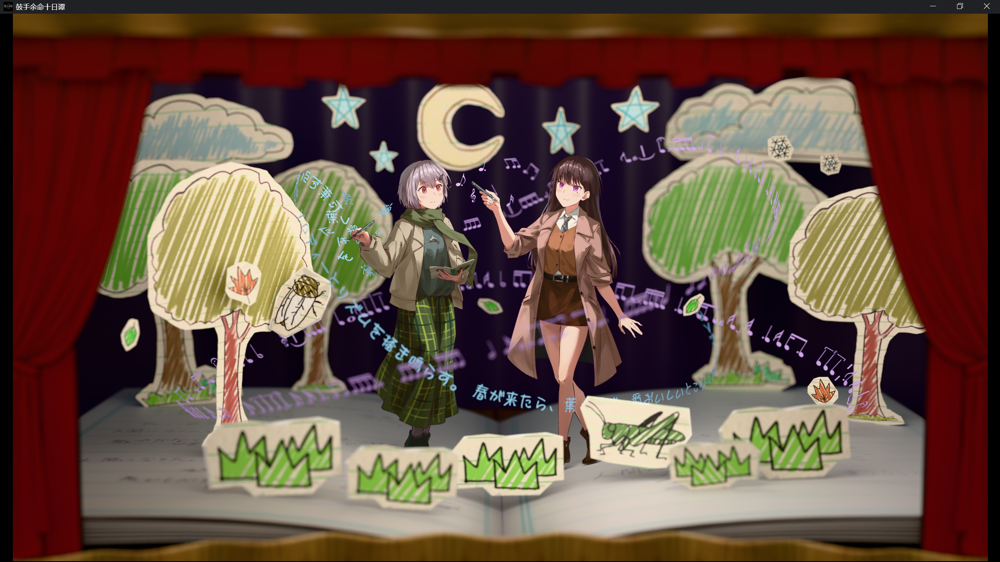
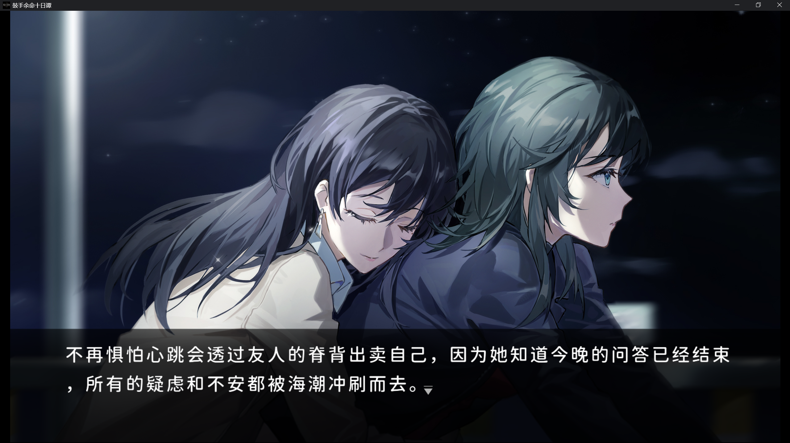

我大概一辈子也忘不了《BanG Dream! It is MyGO!!!!!》和《鼓手余命十日谭》了。

好像只有我缺少了什么
和这世界有所偏离
Wen soll man fragen, wenn man sich selber nicht versteht?
若你不曾了解自己，又该向谁究问何事？
Wie kann man frei sein, wenn man seinem eigenen Schatten nie entgeht?
若你不曾逃离傍身之影，又该从何得到自由解脱？

Angst, dir mir den Atem raubt, blei auf meinen Schultern
恐惧扼住咽喉，如枷锁禁锢我的双臂
Schweigen, das mir Fragen stellt, und keine Antwort gibt auuf mein Warum
我向沉默发问，沉默却愈发震耳欲聋
Wie wird man seinen Schatten los? Wie sagt man seinem Schicksal Nein?
你要如何逃离自己的阴影？如何反叛命运？
Wie kriecht man aus der eignen Haut? Wie kann man je ein anderer sein?
又要如何冲破自我的桎梏？如何蜕变重生？
“也许它也在冬眠？” 蝉想，“错过这场雪是很可惜的事情。”
但好在它还会唱歌，好在它还能唱歌。
白茫茫的雪过了冬天就会融化，但歌曲可以一直流传下去。
如果它愿意的话，下个夏天也能接着唱。
或许就让蝉把正在冬眠的蟋蟀摇醒，让它起床看雪怎么样？
或者是蝉以为对方冻晕过去了，对着睡着的蟋蟀回忆它们之间的故事？
“这是你给我的挡雨叶片，这是你捡到的会折射出七色光芒的玻璃碎片”
“这是我刚刚见进来的雪，你要是睡一整个冬天的话，它就要化掉了。”
蟋蟀被蝉搬家般叮铃咣啷的动静吵醒，不知道该不该继续装睡下去。
我还是想写一个温柔一些的结局。

Was soll mir die Unsterblichkeit? Vor dem Sterben will ich leben.
不朽于我毫无价值，所求无非向死而生
Der Grabgeruch der Lorbeergruft, betaubt mich nicht mehr.
陵墓的腐蠹之气，将不再诱我沉迷
俄狄浦斯虽然做了预言中的恶行，但在此之前他自己从不知晓这个语言。
他从来没有机会真正地与命运抗争，只是被玩弄了。
那我认为，这和被一个恶人陷害没有太大的区别。我并不会将这种明确的“恶意”认作为“我的命运”。
相反，我的命运是跟它对抗到最后一刻。
如果海铃你说的这个恶意，它狡猾地没有提前告知你，只是默默策划一场突袭。
最后得逞时像反派一样出场，大喊：“这都是我的计划。这就是命运。”
那该怎么办呢。
很简单不是吗。
只要在死前问心无愧就好了。

Wie kann man fluchten, wenn man sich selbst im Wege steht?
若你从来自缚手脚，又该如何得以脱逃？
Vor deinem Schicksal, kannst du nicht fliehen!
命运如约而至，而你无处可藏！
The world goes round no matter,
世界会一直运转下去
And that’s the only truth we know
这是我们唯一知晓真理

Wenn der Kampf vorbei ist, und dein Weg zu Ende
当抗争将歇，待前路已尽
Bist du nur noch, der du bist, dann zählt nur noch, was unzerstörbar ist
唯有坚不可摧的本真，方能在身后永世长存